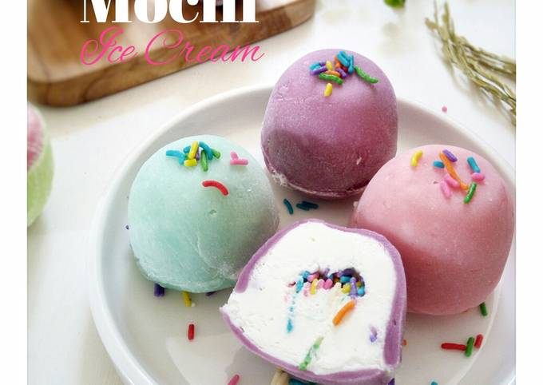

Mochi Ice Cream

Description
Mochi ice cream is a Japanese dessert that combines a soft, chewy, pounded rice dumpling (mochi) with an ice cream filling
Ingredients
- Milk.
- Cream.
- Cane Sugar.
- Whey.
- Nonfat Dry Milk.
- Caramel Color.
- Stabilizer (Guar Gum, Locust Bean Gum).
- Coffee.
- Natural Flavors.
Steps
- Scoop small balls of ice cream and freeze until firm.
- Mix mochiko, water, and sugar. Microwave in intervals (1 min, stir, 1 min, stir, 30 sec) until thick and sticky.
- Dust with cornstarch, roll dough to ¼ inch thick, and cut into 3-4 inch circles. Chill briefly.
- Wrap each ice cream ball in a mochi dough circle, sealing the edges.
- Freeze for 1 hour before serving.